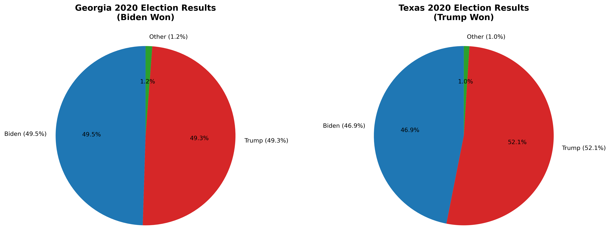
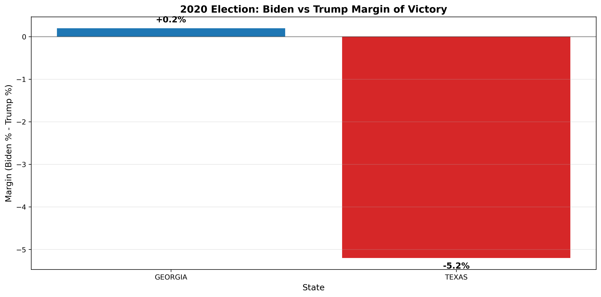
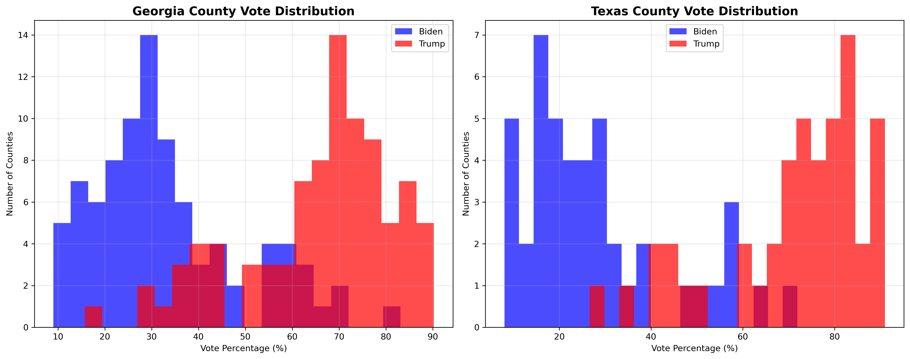
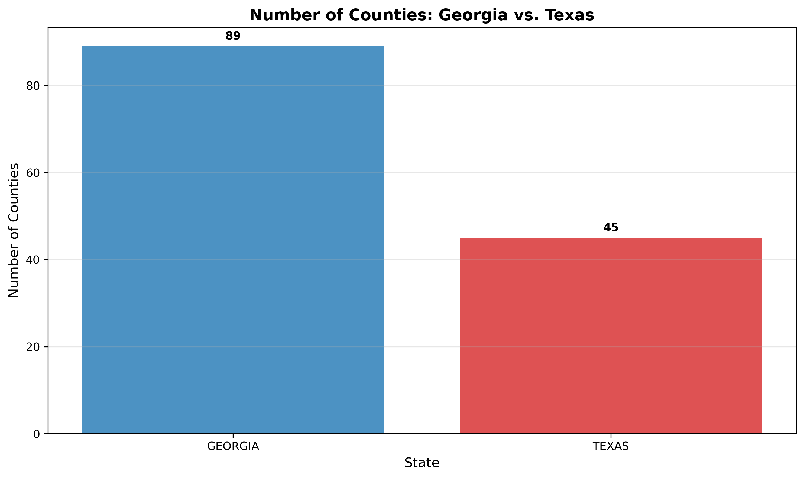
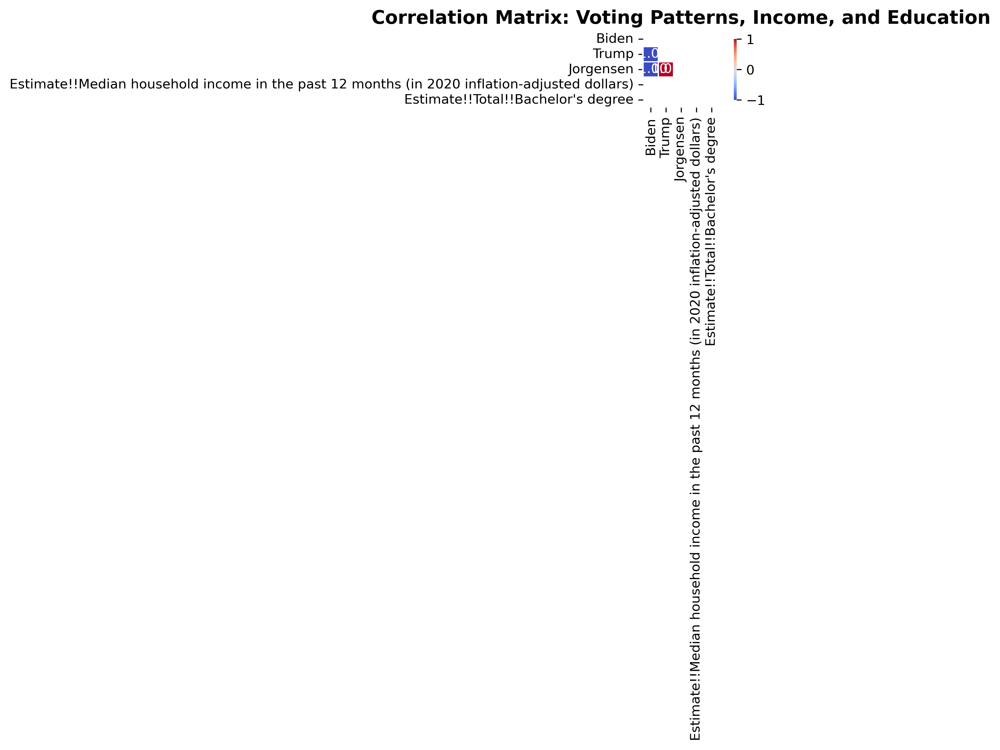
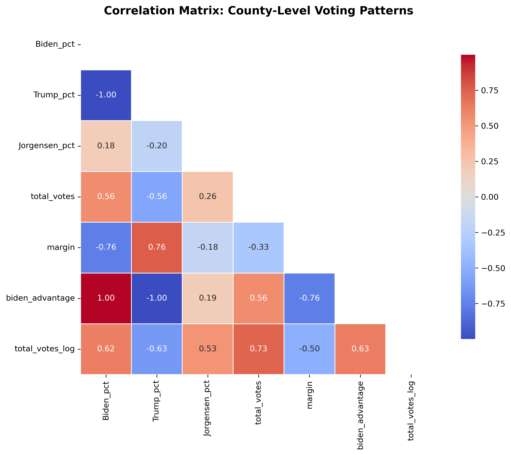

Project Overview
This project analyzes voting patterns in the 2020 U.S. Presidential Election, focusing on the states of Georgia and Texas. It combines county-level voting data with income and education statistics to explore correlations and visualize key trends. The analysis includes vote percentages, county-level comparisons, correlation matrices, and margin of victory analysis.
Technical Stack
Key Findings & Statistics
Georgia Results
Biden: 49.5% | Trump: 49.3% | Other: 1.2%
Biden won by 0.2% margin
Texas Results
Biden: 46.9% | Trump: 52.1% | Other: 1.0%
Trump won by 5.2% margin
Analysis Scope
159 counties in Georgia
254 counties in Texas
Data Sources
County-level voting data
Income & education statistics
Visualizations & Analysis
Vote Percentages Comparison

Comparison of vote percentages for Biden, Trump, and Jorgensen across Georgia and Texas.
2020 Election Results
Pie charts showing the actual 2020 election results for both states.
Margin of Victory
Bar chart showing the margin of victory for each candidate in both states.
County Vote Distributions
Histograms showing the distribution of vote percentages across counties.
Biden vs Trump County Analysis

Scatter plot comparing Biden and Trump vote percentages by county.
County Comparison
Comparison of county-level voting patterns between Georgia and Texas.
Correlation Matrix
Heatmap showing correlations between voting patterns, income, and education.
County Correlation Analysis
Detailed correlation analysis at the county level.
Methodology
Data Processing Pipeline
- Data Cleaning: Standardized and cleaned raw voting, income, and education datasets
- Data Merging: Combined annual CSVs into comprehensive datasets
- Analysis: Performed statistical analysis and correlation studies
- Visualization: Created interactive charts and graphs using matplotlib and seaborn
Key Features
- County-level voting data analysis
- Income and education correlation studies
- Competitive county identification
- Statistical significance testing
- Interactive data visualizations
- Comprehensive documentation
Project Repository
This project is part of my portfolio and can be found in the main repository. The analysis includes:
- 15 essential files (reduced from 26 through optimization)
- 7 comprehensive visualizations
- Complete data processing pipeline
- Statistical analysis scripts
- Detailed documentation
GitHub Repository: portfolio-site